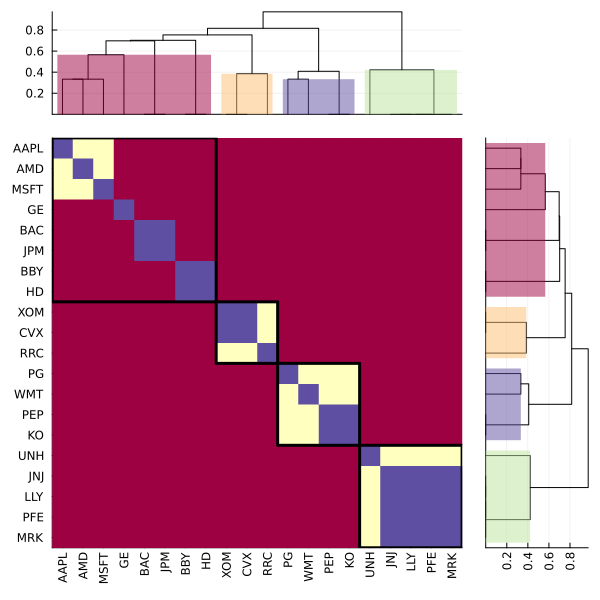
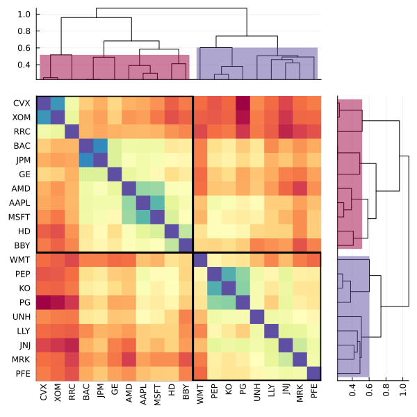
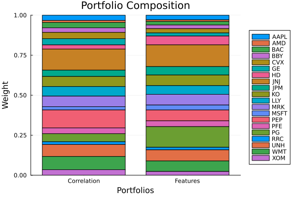
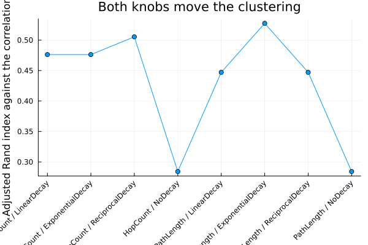
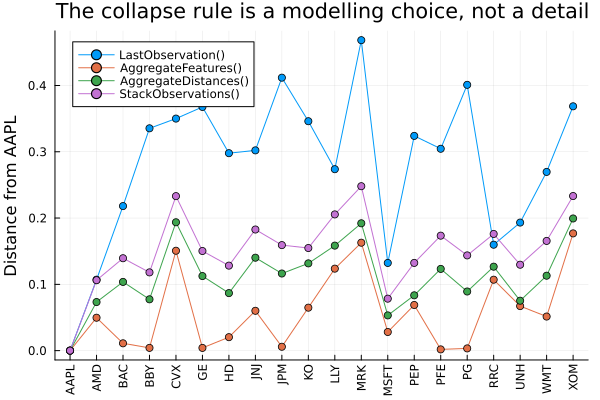
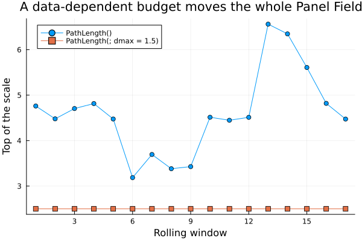
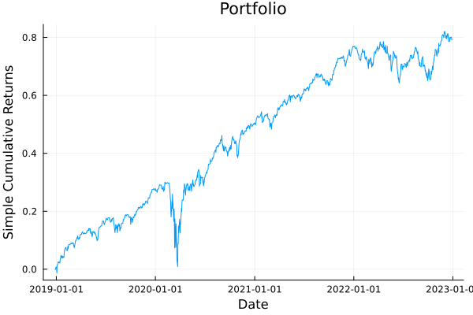

The source files can be found in examples/.
Feature matrices as a distance source
Every clustering optimiser so far builds its hierarchy from the returns. A covariance estimate becomes a correlation, a correlation becomes a distance, and the distance becomes a dendrogram. That route sees only the structure the price history contains.
A FeatureDistance replaces the returns with a matrix of assets by features. Feature k is any per-asset quantity you can name, such as a sector membership, a factor loading, a position in the asset network or a trailing characteristic. Two assets are close when their feature rows point the same way. The output is an ordinary distance matrix, so every consumer that takes a distance estimator takes this one: ClustersEstimator, NetworkEstimator, the clustering optimisers, and the phylogeny and centrality constraint families.
Nothing stores the matrix. An AssetPanel holds the values, one field per named quantity, and feature_matrix stacks the fields a selector names into the matrix a distance measures. The stacking happens where the distance is measured, so one panel serves a taxonomy, a fundamentals table and a factor model at once.
Use a feature matrix for structure the returns do not contain. A classification, a mandate, a supply chain or a factor model brings in relationships the price history has no record of. Feeding the returns graph back in as features is a different tool, and section 4 covers it.
Reach for a FeatureDistance when you can name the structure you want the allocation to respect and it is not in the price history: a sector or country taxonomy, a regulatory bucketing, an ESG classification, a factor exposure profile. Reach for it too when you want the hierarchy to hold still between rebalances. A classification does not move when the covariance moves, and section 9 measures what that saves in turnover. Stay with the ordinary correlation distance when the structure you care about is co-movement itself.
using PortfolioOptimisers, CSV, TimeSeries, DataFrames, PrettyTables, Clarabel, StatsPlots, GraphRecipes, Statistics, LinearAlgebra, Clusteringresfmt = (v, i, j) -> begin return if j == 1 v else isa(v, AbstractFloat) ? "$(round(v*100, digits=3)) %" : v endend;1. The returns and a classification
We use the same twenty-name S&P 500 slice as the other optimiser examples, and add a two-level classification. The levels nest. Every industry belongs to exactly one sector, so two assets in the same industry are in the same sector.
X = TimeArray(CSV.File(joinpath(@__DIR__, "..", "SP500.csv.gz")); timestamp = :Date)[(end - 252):end]rd0 = prices_to_returns(X)pr = prior(EmpiricalPrior(), rd0)slv = Solver(; name = :clarabel, solver = Clarabel.Optimizer, settings = Dict("verbose" => false), check_sol = (; allow_local = true, allow_almost = true))sector = Dict("AAPL" => "Technology", "AMD" => "Technology", "MSFT" => "Technology", "BAC" => "Financials", "JPM" => "Financials", "CVX" => "Energy", "XOM" => "Energy", "RRC" => "Energy", "GE" => "Industrials", "BBY" => "ConsumerDiscretionary", "HD" => "ConsumerDiscretionary", "KO" => "ConsumerStaples", "PEP" => "ConsumerStaples", "PG" => "ConsumerStaples", "WMT" => "ConsumerStaples", "JNJ" => "HealthCare", "LLY" => "HealthCare", "MRK" => "HealthCare", "PFE" => "HealthCare", "UNH" => "HealthCare")industry = Dict("AAPL" => "ConsumerHardware", "AMD" => "Semiconductors", "MSFT" => "Software", "BAC" => "Banks", "JPM" => "Banks", "CVX" => "IntegratedOil", "XOM" => "IntegratedOil", "RRC" => "ExplorationProduction", "GE" => "Conglomerates", "BBY" => "SpecialtyRetail", "HD" => "SpecialtyRetail", "KO" => "Beverages", "PEP" => "Beverages", "PG" => "HouseholdProducts", "WMT" => "MassMerchants", "JNJ" => "Pharmaceuticals", "LLY" => "Pharmaceuticals", "MRK" => "Pharmaceuticals", "PFE" => "Pharmaceuticals", "UNH" => "ManagedCare")Dict{String, String} with 20 entries:
"AAPL" => "ConsumerHardware"
"MSFT" => "Software"
"RRC" => "ExplorationProduction"
"LLY" => "Pharmaceuticals"
"UNH" => "ManagedCare"
"CVX" => "IntegratedOil"
"KO" => "Beverages"
"PEP" => "Beverages"
"HD" => "SpecialtyRetail"
"AMD" => "Semiconductors"
"XOM" => "IntegratedOil"
"JPM" => "Banks"
"PFE" => "Pharmaceuticals"
"BAC" => "Banks"
"GE" => "Conglomerates"
"PG" => "HouseholdProducts"
"MRK" => "Pharmaceuticals"
"JNJ" => "Pharmaceuticals"
"WMT" => "MassMerchants"
"BBY" => "SpecialtyRetail"The classification travels on a UniverseSets. Every key an asset view has to follow carries the xkey prefix, so write "nx_sector" rather than "sector". That prefix is what port_opt_view slices alongside the asset names.
sets = UniverseSets(; xkey = "nx", dict = Dict("nx" => rd0.nx, "nx_sector" => [sector[a] for a in rd0.nx], "nx_industry" => [industry[a] for a in rd0.nx]))taxonomy = ["nx_sector", "nx_industry"]pretty_table(DataFrame("Asset" => rd0.nx, "Sector" => [sector[a] for a in rd0.nx], "Industry" => [industry[a] for a in rd0.nx]); title = "The classification the Asset Panel will carry") The classification the Asset Panel will carry
┌────────┬───────────────────────┬───────────────────────┐
│ Asset │ Sector │ Industry │
│ String │ String │ String │
├────────┼───────────────────────┼───────────────────────┤
│ AAPL │ Technology │ ConsumerHardware │
│ AMD │ Technology │ Semiconductors │
│ BAC │ Financials │ Banks │
│ BBY │ ConsumerDiscretionary │ SpecialtyRetail │
│ CVX │ Energy │ IntegratedOil │
│ GE │ Industrials │ Conglomerates │
│ HD │ ConsumerDiscretionary │ SpecialtyRetail │
│ JNJ │ HealthCare │ Pharmaceuticals │
│ JPM │ Financials │ Banks │
│ KO │ ConsumerStaples │ Beverages │
│ LLY │ HealthCare │ Pharmaceuticals │
│ MRK │ HealthCare │ Pharmaceuticals │
│ MSFT │ Technology │ Software │
│ PEP │ ConsumerStaples │ Beverages │
│ PFE │ HealthCare │ Pharmaceuticals │
│ PG │ ConsumerStaples │ HouseholdProducts │
│ RRC │ Energy │ ExplorationProduction │
│ UNH │ HealthCare │ ManagedCare │
│ WMT │ ConsumerStaples │ MassMerchants │
│ XOM │ Energy │ IntegratedOil │
└────────┴───────────────────────┴───────────────────────┘2. From a classification to an asset panel
An asset panel is a stack of named fields over the assets, and one field holds one named quantity. panel_input turns one UniverseSets key into one raw field. It dispatches on what the key holds: a vector of strings becomes a CategoricalPanelInput, and a vector of numbers becomes a NumericPanelInput. The vector form maps over several keys, which is how a nested taxonomy enters. The field takes its name from the key with the xkey prefix stripped, so "nx_sector" becomes the field "sector".
asset_panel turns the raw inputs into the AssetPanel that the ReturnsResult holds. A categorical field stores one integer code per asset over its own levels rather than an indicator block, so the panel holds the classification once however many levels it has.
inputs = panel_input(sets, taxonomy)pnl = asset_panel(inputs)pretty_table(DataFrame("Panel Field" => [f.name for f in pnl.pf], "Kind" => [string(nameof(typeof(f))) for f in pnl.pf], "Levels" => [length(PortfolioOptimisers.panel_field_labels(f)) for f in pnl.pf]); title = "One Panel Field per level of the classification")One Panel Field per level of the classification
┌─────────────┬───────────────────────┬────────┐
│ Panel Field │ Kind │ Levels │
│ String │ String │ Int64 │
├─────────────┼───────────────────────┼────────┤
│ sector │ CategoricalPanelField │ 7 │
│ industry │ CategoricalPanelField │ 13 │
└─────────────┴───────────────────────┴────────┘feature_matrix stacks the panel into the matrix a distance measures, and feature_labels names its columns. A categorical field gives one 0/1 column per level, so Z[i, k] == 1 when asset i belongs to group k.
Take the column names from feature_labels rather than rebuilding the order by hand. Each label is the selector entry that picks out its own column, so the label vector is itself a selector. We stack the panel against that vector below and compare the result with Z.
Z = feature_matrix(pnl)nz = feature_labels(pnl)pretty_table(DataFrame(["Asset" => rd0.nx; [string(first(nz[k]), "=", last(nz[k])) => Z[:, k] for k in 1:6]...]); title = "The first six feature columns (of $(length(nz)))")println("The labels rebuild the matrix: ", feature_matrix(pnl, nz) == Z) The first six feature columns (of 20)
┌────────┬──────────────────────────────┬────────────────────────┬───────────────┬───────────────────┬───────────────────┬────────────────────┐
│ Asset │ sector=ConsumerDiscretionary │ sector=ConsumerStaples │ sector=Energy │ sector=Financials │ sector=HealthCare │ sector=Industrials │
│ String │ Float64 │ Float64 │ Float64 │ Float64 │ Float64 │ Float64 │
├────────┼──────────────────────────────┼────────────────────────┼───────────────┼───────────────────┼───────────────────┼────────────────────┤
│ AAPL │ 0.0 │ 0.0 │ 0.0 │ 0.0 │ 0.0 │ 0.0 │
│ AMD │ 0.0 │ 0.0 │ 0.0 │ 0.0 │ 0.0 │ 0.0 │
│ BAC │ 0.0 │ 0.0 │ 0.0 │ 1.0 │ 0.0 │ 0.0 │
│ BBY │ 1.0 │ 0.0 │ 0.0 │ 0.0 │ 0.0 │ 0.0 │
│ CVX │ 0.0 │ 0.0 │ 1.0 │ 0.0 │ 0.0 │ 0.0 │
│ GE │ 0.0 │ 0.0 │ 0.0 │ 0.0 │ 0.0 │ 1.0 │
│ HD │ 1.0 │ 0.0 │ 0.0 │ 0.0 │ 0.0 │ 0.0 │
│ JNJ │ 0.0 │ 0.0 │ 0.0 │ 0.0 │ 1.0 │ 0.0 │
│ JPM │ 0.0 │ 0.0 │ 0.0 │ 1.0 │ 0.0 │ 0.0 │
│ KO │ 0.0 │ 1.0 │ 0.0 │ 0.0 │ 0.0 │ 0.0 │
│ LLY │ 0.0 │ 0.0 │ 0.0 │ 0.0 │ 1.0 │ 0.0 │
│ MRK │ 0.0 │ 0.0 │ 0.0 │ 0.0 │ 1.0 │ 0.0 │
│ MSFT │ 0.0 │ 0.0 │ 0.0 │ 0.0 │ 0.0 │ 0.0 │
│ PEP │ 0.0 │ 1.0 │ 0.0 │ 0.0 │ 0.0 │ 0.0 │
│ PFE │ 0.0 │ 0.0 │ 0.0 │ 0.0 │ 1.0 │ 0.0 │
│ PG │ 0.0 │ 1.0 │ 0.0 │ 0.0 │ 0.0 │ 0.0 │
│ RRC │ 0.0 │ 0.0 │ 1.0 │ 0.0 │ 0.0 │ 0.0 │
│ UNH │ 0.0 │ 0.0 │ 0.0 │ 0.0 │ 1.0 │ 0.0 │
│ WMT │ 0.0 │ 1.0 │ 0.0 │ 0.0 │ 0.0 │ 0.0 │
│ XOM │ 0.0 │ 0.0 │ 1.0 │ 0.0 │ 0.0 │ 0.0 │
└────────┴──────────────────────────────┴────────────────────────┴───────────────┴───────────────────┴───────────────────┴────────────────────┘
The labels rebuild the matrix: true2.1 Why this panel needs no standardisation
A categorical field partitions the assets. Each asset lands in exactly one level, so every row of its indicator block carries exactly one 1, and a panel of L categorical fields gives every asset a row of norm sqrt(L). The cosine between two assets is then
cos(i, j) = shared(i, j) / Lthe count of levels the two assets share, divided by the number of levels. The default metric, AngularDist, therefore takes L + 1 distinct values here, and it is bounded by 0.5 rather than 1.0, because a non-negative row admits no negative cosine.
A numeric or a tensor field carries values on its own scale, so neither the fixed row norm nor the bound holds for it.
D = distance(FeatureDistance(), Z; dims = 1)levels = sort(unique(round.(D; digits = 6)))pretty_table(DataFrame("Quantity" => ["Feature columns", "Levels agreed on (L)", "Row norm (every row, = sqrt(L))", "Distinct distances", "The distances themselves"], "Value" => [string(size(Z, 2)), string(length(taxonomy)), string(round(norm(Z[1, :]); digits = 4)), string(length(levels)), string(round.(levels; digits = 4))]); title = "The feature distance this classification produces") The feature distance this classification produces
┌─────────────────────────────────┬────────────────────┐
│ Quantity │ Value │
│ String │ String │
├─────────────────────────────────┼────────────────────┤
│ Feature columns │ 20 │
│ Levels agreed on (L) │ 2 │
│ Row norm (every row, = sqrt(L)) │ 1.4142 │
│ Distinct distances │ 3 │
│ The distances themselves │ [0.0, 0.3333, 0.5] │
└─────────────────────────────────┴────────────────────┘The table holds three distances, one per level of shared membership, up to the floating-point noise of acos. Two assets in the same industry are at 0.0, two in the same sector but different industries at 1/3, and two that share nothing at 0.5.
2.2 The clustering it produces
The panel travels on the ReturnsResult, because it is data rather than configuration. The distance estimator goes into an ordinary ClustersEstimator through its de slot, and clusterise reads the panel off the ReturnsResult it is handed.
rd = ReturnsResult(; nx = rd0.nx, X = rd0.X, ts = rd0.ts, pnl = pnl)onc = OptimalNumberClusters(;)cle_cor = ClustersEstimator(; onc = onc)cle_fea = ClustersEstimator(; de = FeatureDistance(), onc = onc)clr_cor = clusterise(cle_cor, rd)clr_fea = clusterise(cle_fea, rd)pretty_table(DataFrame("Asset" => rd.nx, "Sector" => [sector[a] for a in rd.nx], "Correlation cut" => assignments(clr_cor), "Feature cut" => assignments(clr_fea)); title = "Cluster assignments according to correlation and feature distance")Cluster assignments according to correlation and feature distance
┌────────┬───────────────────────┬─────────────────┬─────────────┐
│ Asset │ Sector │ Correlation cut │ Feature cut │
│ String │ String │ Int64 │ Int64 │
├────────┼───────────────────────┼─────────────────┼─────────────┤
│ AAPL │ Technology │ 1 │ 1 │
│ AMD │ Technology │ 1 │ 1 │
│ BAC │ Financials │ 1 │ 1 │
│ BBY │ ConsumerDiscretionary │ 1 │ 1 │
│ CVX │ Energy │ 1 │ 2 │
│ GE │ Industrials │ 1 │ 1 │
│ HD │ ConsumerDiscretionary │ 1 │ 1 │
│ JNJ │ HealthCare │ 2 │ 3 │
│ JPM │ Financials │ 1 │ 1 │
│ KO │ ConsumerStaples │ 2 │ 4 │
│ LLY │ HealthCare │ 2 │ 3 │
│ MRK │ HealthCare │ 2 │ 3 │
│ MSFT │ Technology │ 1 │ 1 │
│ PEP │ ConsumerStaples │ 2 │ 4 │
│ PFE │ HealthCare │ 2 │ 3 │
│ PG │ ConsumerStaples │ 2 │ 4 │
│ RRC │ Energy │ 1 │ 2 │
│ UNH │ HealthCare │ 2 │ 3 │
│ WMT │ ConsumerStaples │ 2 │ 4 │
│ XOM │ Energy │ 1 │ 2 │
└────────┴───────────────────────┴─────────────────┴─────────────┘We score the two hierarchies against each other with the adjusted Rand index, cut by cut. On this universe the two cuts are identical at four clusters, and they separate as the cut goes finer. A sector classification and a one-year correlation read the same coarse structure here. The feature route differs in the fine structure, in the merge order, and in what happens when the sample moves, which section 9 measures.
agreement = DataFrame("k" => 2:10, "Adjusted Rand index" => [round(randindex(cutree(clr_cor.res; k = k), cutree(clr_fea.res; k = k))[1]; digits = 3) for k in 2:10])pretty_table(agreement; title = "How far the two hierarchies agree, cut by cut")How far the two hierarchies agree, cut by cut
┌───────┬─────────────────────┐
│ k │ Adjusted Rand index │
│ Int64 │ Float64 │
├───────┼─────────────────────┤
│ 2 │ 0.332 │
│ 3 │ 0.5 │
│ 4 │ 1.0 │
│ 5 │ 0.728 │
│ 6 │ 0.707 │
│ 7 │ 0.879 │
│ 8 │ 0.699 │
│ 9 │ 0.768 │
│ 10 │ 0.692 │
└───────┴─────────────────────┘Plot the clusters for the feature distance clustering.
plot_clusters(clr_fea, rd.nx)
Plot the clusters for the correlation clustering.
plot_clusters(clr_cor, rd.nx)
We hand both hierarchies to HierarchicalRiskParity and compare the weights. Nothing on the optimiser names the feature source. The panel travels with the returns, and the distance estimator reads it there.
hrp_cor = optimise(HierarchicalRiskParity(; opt = HierarchicalOptimiser(; pe = pr, cle = cle_cor, slv = slv), r = Variance()), rd)hrp_fea = optimise(HierarchicalRiskParity(; opt = HierarchicalOptimiser(; pe = pr, cle = cle_fea, slv = slv), r = Variance()), rd)pretty_table(DataFrame("Asset" => rd.nx, "HRP correlation" => hrp_cor.w, "HRP features" => hrp_fea.w, "Difference" => hrp_fea.w - hrp_cor.w); formatters = [resfmt], title = "Same risk measure, same prior, two hierarchies")plot_stacked_bar_composition([hrp_cor, hrp_fea], rd; xticks = (1:2, ["Correlation", "Features"]))
3. Where the panel comes from
FeatureDistance's ape slot decides which panel gets measured, and it takes two settings.
ape = nothing, the default, reads the panel theReturnsResultholds. That is what section 2 does. You built the panel, so you named its fields and you know what is in it.ape = <producer>builds a panel at the point of use, from the prior and the returns the subproblem was handed. A producer is anAbstractAssetPanelEstimator, and the library ships two.
A producer never reads the panel that came with the returns, and a panel that came with the returns is never derived. One route gives one panel, and no precedence rule decides between them.
The two routes differ under a fold. A panel that travels with the returns is data, so a fold slices it. A produced panel is recomputed on the subproblem's own returns, so a fold refits it. Section 8 measures the difference.
3.1 RegressionPanel, factor loadings
RegressionPanel reads the loadings a factor prior has already fitted, so an asset's feature row is its position in the factor coordinate system. The loadings come from the same returns, so this route brings in no outside structure. It is still a different reading of those returns, because two assets can load alike and co-move weakly.
The panel it returns holds one TensorPanelField named "loadings". Its trailing axis takes the factor names from the returns it was handed. Loadings carry a sign, which decides the metric in section 5.
F = TimeArray(CSV.File(joinpath(@__DIR__, "..", "Factors.csv.gz")); timestamp = :Date)[(end - 252):end]rdf = prices_to_returns(price_ingestion(PriceIngestion(), X; F = F))pr_loadings = prior(FactorPrior(), rdf)pnl_loadings = asset_panel(RegressionPanel(), pr_loadings, rdf, rdf.X)Z_loadings = feature_matrix(pnl_loadings)pretty_table(DataFrame(["Asset" => rd.nx; [last(l) => Z_loadings[:, k] for (k, l) in pairs(feature_labels(pnl_loadings))]...]); formatters = [(v, i, j) -> j == 1 ? v : round(v; digits = 4)], title = "Factor loadings as a Panel Field") Factor loadings as a Panel Field
┌────────┬─────────┬─────────┬─────────┬─────────┬─────────┐
│ Asset │ MTUM │ QUAL │ SIZE │ USMV │ VLUE │
│ String │ Float64 │ Float64 │ Float64 │ Float64 │ Float64 │
├────────┼─────────┼─────────┼─────────┼─────────┼─────────┤
│ AAPL │ 0.0 │ 1.9094 │ -0.7676 │ 0.0 │ 0.0 │
│ AMD │ 0.377 │ 3.0672 │ 0.0 │ -2.1767 │ 0.0 │
│ BAC │ 0.2536 │ 0.0 │ 0.0 │ -0.5916 │ 1.2588 │
│ BBY │ -0.6824 │ 1.2054 │ 0.0 │ 0.0 │ 0.6803 │
│ CVX │ 0.2959 │ 0.0 │ 0.0 │ -0.8437 │ 1.0085 │
│ GE │ 0.0 │ 0.0 │ 0.0 │ 0.0 │ 1.1353 │
│ HD │ -0.3604 │ 0.8314 │ 0.0 │ 0.5918 │ 0.0 │
│ JNJ │ -0.1454 │ 0.0 │ -0.8823 │ 1.3659 │ 0.3754 │
│ JPM │ 0.0 │ -0.6254 │ 0.4967 │ 0.0 │ 1.1515 │
│ KO │ -0.2146 │ -0.487 │ 0.0 │ 1.3327 │ 0.2825 │
│ LLY │ 0.2717 │ 0.0 │ -0.9266 │ 1.6874 │ 0.0 │
│ MRK │ 0.0 │ 0.0 │ -1.1839 │ 1.356 │ 0.5509 │
│ MSFT │ 0.0 │ 2.0455 │ -0.4585 │ 0.0 │ -0.5295 │
│ PEP │ -0.1564 │ 0.0 │ -0.6833 │ 1.5089 │ 0.2629 │
│ PFE │ 0.0 │ 0.0 │ -0.9477 │ 1.3855 │ 0.521 │
│ PG │ -0.2512 │ 0.0 │ -0.7663 │ 1.666 │ 0.3126 │
│ RRC │ 0.0 │ 0.0 │ 0.0 │ 0.0 │ 1.2234 │
│ UNH │ 0.3807 │ -0.9579 │ 0.0 │ 1.7058 │ 0.0 │
│ WMT │ -0.3598 │ 0.0 │ 0.0 │ 1.1136 │ 0.0 │
│ XOM │ 0.4151 │ -0.9477 │ 0.0 │ 0.0 │ 1.2728 │
└────────┴─────────┴─────────┴─────────┴─────────┴─────────┘A producer that reads a prior needs one, so we hand clusterise the prior result and pass the returns beside it as a keyword.
de_loadings = FeatureDistance(; ape = RegressionPanel())clr_loadings = clusterise(ClustersEstimator(; de = de_loadings, onc = onc), pr_loadings; rd = rdf)println("The producer and the panel agree exactly: ", clr_loadings.D == distance(FeatureDistance(), Z_loadings; dims = 1))The producer and the panel agree exactly: true3.2 PhylogenyPanel, the returns graph
PhylogenyPanel turns the asset network into a square field of assets by assets, where column k says how close each asset is to asset k. The graph is filtered out of the correlation, so this route brings in no outside structure either. What it adds is a graded reading of the network. phylogeny_matrix accumulates a walk count and then clamps it to 0 or 1, which drops the step count. This one keeps the step count.
Its source is always an estimator, never a precomputed result, so it rebuilds the graph on whatever universe the subproblem hands it. It reads no prior, so it can run before a prior is fitted, at a site such as preselection.
ape_graph = PhylogenyPanel(; pl = NetworkEstimator(; sep = HopCount(; n = 2)), alg = Proximity(; decay = LinearDecay()))pnl_graph = asset_panel(ape_graph, nothing, rd, rd.X)Z_graph = feature_matrix(pnl_graph)pretty_table(DataFrame(["Asset" => rd.nx; [rd.nx[k] => Z_graph[:, k] for k in 1:6]...]); formatters = [(v, i, j) -> j == 1 ? v : round(v; digits = 4)], title = "The first six columns of the graph Panel Field") The first six columns of the graph Panel Field
┌────────┬─────────┬─────────┬─────────┬─────────┬─────────┬─────────┐
│ Asset │ AAPL │ AMD │ BAC │ BBY │ CVX │ GE │
│ String │ Float64 │ Float64 │ Float64 │ Float64 │ Float64 │ Float64 │
├────────┼─────────┼─────────┼─────────┼─────────┼─────────┼─────────┤
│ AAPL │ 3.0 │ 2.0 │ 0.0 │ 0.0 │ 0.0 │ 1.0 │
│ AMD │ 2.0 │ 3.0 │ 0.0 │ 0.0 │ 1.0 │ 2.0 │
│ BAC │ 0.0 │ 0.0 │ 3.0 │ 0.0 │ 0.0 │ 1.0 │
│ BBY │ 0.0 │ 0.0 │ 0.0 │ 3.0 │ 0.0 │ 0.0 │
│ CVX │ 0.0 │ 1.0 │ 0.0 │ 0.0 │ 3.0 │ 2.0 │
│ GE │ 1.0 │ 2.0 │ 1.0 │ 0.0 │ 2.0 │ 3.0 │
│ HD │ 1.0 │ 0.0 │ 0.0 │ 2.0 │ 0.0 │ 0.0 │
│ JNJ │ 1.0 │ 0.0 │ 0.0 │ 0.0 │ 0.0 │ 0.0 │
│ JPM │ 0.0 │ 1.0 │ 2.0 │ 0.0 │ 1.0 │ 2.0 │
│ KO │ 1.0 │ 0.0 │ 0.0 │ 0.0 │ 0.0 │ 0.0 │
│ LLY │ 0.0 │ 0.0 │ 0.0 │ 0.0 │ 0.0 │ 0.0 │
│ MRK │ 0.0 │ 0.0 │ 0.0 │ 0.0 │ 0.0 │ 0.0 │
│ MSFT │ 2.0 │ 1.0 │ 0.0 │ 1.0 │ 0.0 │ 0.0 │
│ PEP │ 2.0 │ 1.0 │ 0.0 │ 0.0 │ 0.0 │ 0.0 │
│ PFE │ 0.0 │ 0.0 │ 0.0 │ 0.0 │ 0.0 │ 0.0 │
│ PG │ 0.0 │ 0.0 │ 0.0 │ 0.0 │ 0.0 │ 0.0 │
│ RRC │ 0.0 │ 0.0 │ 0.0 │ 0.0 │ 1.0 │ 0.0 │
│ UNH │ 1.0 │ 0.0 │ 0.0 │ 0.0 │ 0.0 │ 0.0 │
│ WMT │ 1.0 │ 0.0 │ 0.0 │ 0.0 │ 0.0 │ 0.0 │
│ XOM │ 0.0 │ 0.0 │ 0.0 │ 0.0 │ 2.0 │ 1.0 │
└────────┴─────────┴─────────┴─────────┴─────────┴─────────┴─────────┘Read the values off the table. 3 is the asset itself, 2 a direct neighbour, 1 a two-hop neighbour, and 0 an asset the budget does not reach. Section 4 says where those numbers come from, and why LinearDecay alone reads the budget as a scale.
3.3 The three routes side by side
routes = DataFrame("Route" => ["The carrier's panel", "RegressionPanel", "PhylogenyPanel"], "`ape`" => ["nothing", "RegressionPanel()", "PhylogenyPanel(; …)"], "Feature axis" => ["whatever you named", "factors", "the assets"], "Shape here" => [string(size(Z)), string(size(Z_loadings)), string(size(Z_graph))], "Exogenous" => ["depends on the source", "no", "no"], "Signed" => ["depends on the source", "yes", "no"], "Under a fold" => ["sliced", "refitted", "refitted"])pretty_table(routes; title = "The three routes a Feature Matrix takes") The three routes a Feature Matrix takes
┌─────────────────────┬─────────────────────┬────────────────────┬────────────┬───────────────────────┬───────────────────────┬──────────────┐
│ Route │ `ape` │ Feature axis │ Shape here │ Exogenous │ Signed │ Under a fold │
│ String │ String │ String │ String │ String │ String │ String │
├─────────────────────┼─────────────────────┼────────────────────┼────────────┼───────────────────────┼───────────────────────┼──────────────┤
│ The carrier's panel │ nothing │ whatever you named │ (20, 20) │ depends on the source │ depends on the source │ sliced │
│ RegressionPanel │ RegressionPanel() │ factors │ (20, 5) │ no │ yes │ refitted │
│ PhylogenyPanel │ PhylogenyPanel(; …) │ the assets │ (20, 20) │ no │ no │ refitted │
└─────────────────────┴─────────────────────┴────────────────────┴────────────┴───────────────────────┴───────────────────────┴──────────────┘4. Two settings on the graph producer, and neither implies the other
PhylogenyPanel reads two settings, and they live on two different objects.
sepon theNetworkEstimatordecides which pairs are related, which is how far apart two assets may sit and still score above zero.HopCountcounts edges with a budget ofnof them.PathLengthsums distances along the shortest path with a budgetdmaxin those units.decayonProximitydecides how strongly a related pair scores as the separation grows.
Setting one does not set the other, and mixing them up raises no error. The default pairing hides the difference. Under LinearDecay with HopCount the budget is also the top of the scale, so changing sep looks like it changes the fall-off. Under any other decay the two are separate. The cell below crosses four decays against two separations.
separations = ["HopCount(; n = 2)" => HopCount(; n = 2), "PathLength(; dmax = 1.0)" => PathLength(; dmax = 1.0)]decays = ["LinearDecay()" => LinearDecay(), "ExponentialDecay()" => ExponentialDecay(), "ReciprocalDecay()" => ReciprocalDecay(), "NoDecay()" => NoDecay()]function graph_panel(sep, decay) ape = PhylogenyPanel(; pl = NetworkEstimator(; sep = sep), alg = Proximity(; decay = decay)) return asset_panel(ape, nothing, rd, rd.X)endsweep = DataFrame()for (sname, sep) in separations, (dname, decay) in decays png = graph_panel(sep, decay) Zg = feature_matrix(png) off = [Zg[i, j] for i in axes(Zg, 1) for j in axes(Zg, 2) if i != j] clg = clusterise(cle_fea, ReturnsResult(; nx = rd.nx, X = rd.X, ts = rd.ts, pnl = png)) append!(sweep, DataFrame("Separation" => sname, "Decay" => dname, "Self score" => Zg[1, 1], "Largest off-diagonal" => maximum(off), "Related pairs" => count(!iszero, off), "ARI vs correlation" => randindex(cutree(clr_cor.res; k = 4), cutree(clg.res; k = 4))[1]))endpretty_table(sweep; formatters = [(v, i, j) -> isa(v, AbstractFloat) ? round(v; digits = 4) : v], title = "Four decays crossed against two separations") Four decays crossed against two separations
┌──────────────────────────┬────────────────────┬────────────┬──────────────────────┬───────────────┬────────────────────┐
│ Separation │ Decay │ Self score │ Largest off-diagonal │ Related pairs │ ARI vs correlation │
│ String │ String │ Float64 │ Float64 │ Int64 │ Float64 │
├──────────────────────────┼────────────────────┼────────────┼──────────────────────┼───────────────┼────────────────────┤
│ HopCount(; n = 2) │ LinearDecay() │ 3.0 │ 2.0 │ 96 │ 0.4762 │
│ HopCount(; n = 2) │ ExponentialDecay() │ 1.0 │ 0.3679 │ 96 │ 0.4762 │
│ HopCount(; n = 2) │ ReciprocalDecay() │ 1.0 │ 0.5 │ 96 │ 0.5053 │
│ HopCount(; n = 2) │ NoDecay() │ 1.0 │ 1.0 │ 96 │ 0.2842 │
│ PathLength(; dmax = 1.0) │ LinearDecay() │ 2.0 │ 1.7747 │ 94 │ 0.4471 │
│ PathLength(; dmax = 1.0) │ ExponentialDecay() │ 1.0 │ 0.7983 │ 94 │ 0.5274 │
│ PathLength(; dmax = 1.0) │ ReciprocalDecay() │ 1.0 │ 0.8161 │ 94 │ 0.4471 │
│ PathLength(; dmax = 1.0) │ NoDecay() │ 1.0 │ 1.0 │ 94 │ 0.2842 │
└──────────────────────────┴────────────────────┴────────────┴──────────────────────┴───────────────┴────────────────────┘Read the table down the columns rather than across the rows.
Related pairsmoves with the separation and never with the decay. Which pairs are related issep's question alone.Self scoreis1.0for every decay exceptLinearDecay. Under that decay it is the budget plus one, so3underHopCount(; n = 2)and2underPathLength(; dmax = 1.0). The other three pinf(0) = 1and take the fall-off from their own parameter, whatever the budget is. Under the default pairing the budget doubles as the scale, and under every other pairing it does not.ARI vs correlationmoves with both settings. The decay changes the distance, and it changes the clusters that come out of it.NoDecaydoes not mean no truncation. The budget still cuts, so the field is1inside the budget and0outside it, which is an indicator of the neighbourhood rather than a matrix of ones. It is also the only decay under which the two separations reach the same clustering, because an indicator keeps only the support, and these two supports differ by two pairs in ninety-six.
plot(1:size(sweep, 1), sweep[!, "ARI vs correlation"]; marker = :circle, legend = false, xticks = (1:size(sweep, 1), [string(first(split(r.Separation, "(")), " / ", first(split(r.Decay, "("))) for r in eachrow(sweep)]), xrotation = 45, ylabel = "Adjusted Rand index against the correlation cut", title = "Both knobs move the clustering")
PathLength() with no dmax means the whole connected component. Here that is a reasonable choice, because the budget only sets where the fall-off reaches zero, and the decay still grades everything inside it. On the constraint path the same setting selects rather than grades. It declares every reachable pair related, forbids all pairwise co-movement, and solves to a one-asset portfolio without reporting a failure. Section 2.2 of Phylogeny and centrality constraints covers that path. The bare default also ties the scale of the field to the sample, which section 8.3 measures.
5. Metrics, and the similarity slot
FeatureDistance's metric field takes any Distances.SemiMetric, including one you write yourself. The default is AngularDist, the arc-cosine of the cosine similarity scaled to [0, 1], which delegates to the BLAS gemm path of Distances.
The choice changes the answer. Metrics differ in what they are defined on, and one of them returns a number on input outside its domain rather than raising, so the library checks the domain.
metrics = ["AngularDist()" => AngularDist(), "Distances.CosineDist()" => PortfolioOptimisers.Distances.CosineDist(), "Distances.Jaccard()" => PortfolioOptimisers.Distances.Jaccard()]metric_rows = DataFrame()for (mname, metric) in metrics de = FeatureDistance(; metric = metric) Dm = distance(de, Z; dims = 1) append!(metric_rows, DataFrame("Metric" => mname, "Default similarity" => strip(string(de.sim)), "Maximum distance" => round(maximum(Dm); digits = 4), "Distinct values" => length(unique(round.(Dm; digits = 6)))))endpretty_table(metric_rows; title = "Three metrics on the same classification panel") Three metrics on the same classification panel
┌────────────────────────┬────────────────────────┬──────────────────┬─────────────────┐
│ Metric │ Default similarity │ Maximum distance │ Distinct values │
│ String │ SubString{String} │ Float64 │ Int64 │
├────────────────────────┼────────────────────────┼──────────────────┼─────────────────┤
│ AngularDist() │ AngularSimilarity() │ 0.5 │ 3 │
│ Distances.CosineDist() │ ComplementSimilarity() │ 1.0 │ 3 │
│ Distances.Jaccard() │ ComplementSimilarity() │ 1.0 │ 3 │
└────────────────────────┴────────────────────────┴──────────────────┴─────────────────┘On a matrix of indicator columns all three put the pairs in the same order, and only the scale differs. AngularDist stops at 0.5, because a non-negative matrix admits no negative cosine. A signed matrix is a different case, and the next cell measures one.
signed_metric = try distance(FeatureDistance(; metric = PortfolioOptimisers.Distances.Jaccard()), Z_loadings; dims = 1) "no error"catch err sprint(showerror, err)endprintln(signed_metric)DomainError with [0.0 1.90943 … 0.0 0.0; 0.37705 3.06717 … -2.17672 0.0; … ; -0.359849 0.0 … 1.1136 0.0; 0.415139 -0.947715 … 0.0 1.27277]:
all(x -> 0 <= x, Z) must hold. Got
count(x -> !(0 <= x), Z) => 23Distances.Jaccard is the Ruzicka form, and it is defined only on non-negative reals. On signed input it returns values up to 2 and raises nothing, and a clustering routine then takes those values as distances. The domain check raises the error printed above instead, and it covers Distances.BrayCurtis and Distances.ChiSqDist as well. A signed field, and a block of factor loadings above all, wants AngularDist or Distances.CosineDist.
The sim slot
A clustering consumer calls cor_and_dist rather than distance, so a feature distance owes a similarity matrix as well. sim holds it, and default_similarity fills it from the metric. AngularDist takes AngularSimilarity, which recovers the cosine as cos(πD), and every other metric takes ComplementSimilarity, which is 1 - D. Set sim yourself to override that.
S_fea, D_fea = cor_and_dist(FeatureDistance(), nothing, rd.X; rd = rd)println("S and D share provenance: ", size(S_fea) == size(D_fea))S and D share provenance: true6. Both shapes: static and time-varying
A panel is static or time-varying, and the whole panel is one shape. A static panel carries no mask, and every field is assets or assets × labels. A time-varying panel leads every field with an observation axis, and carries an active mask and an estimation mask beside the fields. feature_matrix follows the shape. A static panel stacks to assets × features, and a time-varying one to observations × assets × features.
One distance matrix has to come out of a time-varying matrix, and the alg field says how. The family is open, and the library ships four members.
The two features here move with the sample: annualised realised volatility over twenty-one days, and cumulative return over sixty-three. Both are ordinary numeric fields, so asset_panel builds them as it built the taxonomy.
T, N = size(rd.X)Zvol = zeros(T, N)Zmom = zeros(T, N)for t in 1:T, i in 1:N Zvol[t, i] = std(view(rd.X, max(1, t - 20):t, i)) * sqrt(252) Zmom[t, i] = sum(view(rd.X, max(1, t - 62):t, i))endZvol[1, :] .= Zvol[2, :]pnl_tv = asset_panel([NumericPanelInput(; name = "volatility", vals = Zvol), NumericPanelInput(; name = "momentum", vals = Zmom)])Ztv = feature_matrix(pnl_tv)collapses = ["LastObservation()" => LastObservation(), "AggregateFeatures()" => AggregateFeatures(), "AggregateDistances()" => AggregateDistances(), "StackObservations()" => StackObservations()]collapse_rows = DataFrame()for (cname, alg) in collapses Dc = distance(FeatureDistance(; alg = alg), Ztv; dims = 1) D1 = distance(FeatureDistance(; alg = alg), reshape(Ztv[end, :, :], 1, N, 2); dims = 1) append!(collapse_rows, DataFrame("Collapse" => cname, "Mean distance" => round(mean(Dc); digits = 4), "Maximum distance" => round(maximum(Dc); digits = 4), "Mean at T = 1" => round(mean(D1); digits = 6)))endpretty_table(collapse_rows; title = "Four collapse rules on one $(size(Ztv, 1))×$(size(Ztv, 2))×$(size(Ztv, 3)) Feature Matrix") Four collapse rules on one 252×20×2 Feature Matrix
┌──────────────────────┬───────────────┬──────────────────┬───────────────┐
│ Collapse │ Mean distance │ Maximum distance │ Mean at T = 1 │
│ String │ Float64 │ Float64 │ Float64 │
├──────────────────────┼───────────────┼──────────────────┼───────────────┤
│ LastObservation() │ 0.1243 │ 0.4684 │ 0.12428 │
│ AggregateFeatures() │ 0.0739 │ 0.2265 │ 0.12428 │
│ AggregateDistances() │ 0.1163 │ 0.2197 │ 0.12428 │
│ StackObservations() │ 0.1613 │ 0.2731 │ 0.12428 │
└──────────────────────┴───────────────┴──────────────────┴───────────────┘The four rules give four different answers, and the difference is one of kind rather than degree.
LastObservation, the default, takes the most recent slice and reads no other.AggregateFeaturesaverages the features first, then measures the distance once.AggregateDistancesmeasures each period, then averages the distance matrices. Its constructor refusesMedianCollapse, because a convex combination of metrics is a metric and a median of distance matrices is not.StackObservationsjoins every period into one long coordinate vector. It is the most exposed of the four to scale, because a period with large magnitudes dominates the rest.
The last column of the table is the degenerate case. At one observation the four rules return the same distances, so the four rules are four readings of one idea. A static panel never reads alg, and setting one there raises nothing, because one estimator serves both shapes.
Both averaging rules take observation weights on a w field, so an exponential decay or an entropy-pooling posterior reaches the collapse.
plot([distance(FeatureDistance(; alg = alg), Ztv; dims = 1)[1, :] for (_, alg) in collapses]; label = reshape([c for (c, _) in collapses], 1, :), marker = :circle, xticks = (1:N, rd.nx), xrotation = 90, ylabel = "Distance from AAPL", title = "The collapse rule is a modelling choice, not a detail")
6.1 A static field on a time-varying panel is lifted, not copied
A panel is one shape throughout, so a static input that meets a time-varying one is lifted. asset_panel wraps its values in a RepeatedLeading, which stores them once and indexes a leading observation axis. A classification that never moves therefore costs its own memory beside characteristics that move every day, rather than its own memory times the observation count.
pnl_mixed = asset_panel([panel_input(sets, taxonomy); NumericPanelInput(; name = "volatility", vals = Zvol); NumericPanelInput(; name = "momentum", vals = Zmom)])held(f) = isa(f, CategoricalPanelField) ? f.codes : f.valsstored(v) = isa(v, PortfolioOptimisers.RepeatedLeading) ? length(v.parent) : length(v)pretty_table(DataFrame("Panel Field" => [f.name for f in pnl_mixed.pf], "Values type" => [string(nameof(typeof(held(f)))) for f in pnl_mixed.pf], "Shape it presents" => [string(size(held(f))) for f in pnl_mixed.pf], "Entries stored" => [stored(held(f)) for f in pnl_mixed.pf]); title = "A lifted field presents an observation axis it does not store") A lifted field presents an observation axis it does not store
┌─────────────┬─────────────────┬───────────────────┬────────────────┐
│ Panel Field │ Values type │ Shape it presents │ Entries stored │
│ String │ String │ String │ Int64 │
├─────────────┼─────────────────┼───────────────────┼────────────────┤
│ sector │ RepeatedLeading │ (252, 20) │ 20 │
│ industry │ RepeatedLeading │ (252, 20) │ 20 │
│ volatility │ Array │ (252, 20) │ 5040 │
│ momentum │ Array │ (252, 20) │ 5040 │
└─────────────┴─────────────────┴───────────────────┴────────────────┘7. The selector reads one namespace
FeatureDistance's sel field names what to stack, and it reads the panel's own field index. There is no second namespace, and no integer column to count. An entry takes one of four forms.
| Entry | Columns it contributes |
|---|---|
"name" | every column of that field |
"name" => ["a", "b"] | the levels or labels listed, in that order |
"name" => "a" | one level or label |
"name" => :observed | that field's observed mask, one 0/1 column |
You can mix the forms. The order of the vector is the order of the columns. The default, nothing, stacks every field's values in field order. A bare name gives the values alone and never the mask.
selectors = ["nothing (every field)" => nothing, "[\"sector\"]" => ["sector"], "[\"industry\"]" => ["industry"], "[\"sector\" => \"Energy\", \"industry\"]" => ["sector" => "Energy", "industry"], "[\"sector\" => [\"Energy\", \"HealthCare\"]]" => ["sector" => ["Energy", "HealthCare"]]]selector_rows = DataFrame()for (sname, sel) in selectors Zs = feature_matrix(pnl, sel) Ds = distance(FeatureDistance(), Zs; dims = 1) append!(selector_rows, DataFrame("Selector" => sname, "Columns" => size(Zs, 2), "Distinct distances" => length(unique(round.(Ds; digits = 6))), "Maximum distance" => round(maximum(Ds); digits = 4)))endpretty_table(selector_rows; title = "One namespace, five cuts of the same panel") One namespace, five cuts of the same panel
┌────────────────────────────────────────┬─────────┬────────────────────┬──────────────────┐
│ Selector │ Columns │ Distinct distances │ Maximum distance │
│ String │ Int64 │ Int64 │ Float64 │
├────────────────────────────────────────┼─────────┼────────────────────┼──────────────────┤
│ nothing (every field) │ 20 │ 3 │ 0.5 │
│ ["sector"] │ 7 │ 2 │ 0.5 │
│ ["industry"] │ 13 │ 2 │ 0.5 │
│ ["sector" => "Energy", "industry"] │ 14 │ 3 │ 0.5 │
│ ["sector" => ["Energy", "HealthCare"]] │ 2 │ 3 │ 1.0 │
└────────────────────────────────────────┴─────────┴────────────────────┴──────────────────┘Cutting to "sector" alone gives two distances rather than three, because the industry level is what separated pairs inside one sector. Cutting to two levels of one field moves the bound as well. An asset in neither kept level has a feature row of zeros, so the largest distance reaches 1.0 rather than the 0.5 a full partition gives.
The selector lives on the estimator, so the cut is configuration and the panel stays data.
de_coarse = FeatureDistance(; sel = ["sector"])clr_coarse = clusterise(ClustersEstimator(; de = de_coarse, onc = onc), rd)println("The coarse cut and the full panel differ: ", clr_coarse.D != clr_fea.D)println("The estimator's own labels: ", feature_labels(de_coarse, pr, rd, rd.X))The coarse cut and the full panel differ: true
The estimator's own labels: ["sector" => "ConsumerDiscretionary", "sector" => "ConsumerStaples", "sector" => "Energy", "sector" => "Financials", "sector" => "HealthCare", "sector" => "Industrials", "sector" => "Technology"]7.1 strict, and an entry the panel does not hold
strict is the library-wide setting, and here it governs a name, a level or a label the panel does not hold. Under the default, strict = false, the entry is dropped with a warning. Under strict = true the call raises. Dropping the entry is what lets one estimator serve a universe whose panel has lost a field, which happens inside a fold.
dropped = feature_matrix(pnl, ["not_a_field", "sector"])println("The unknown entry was dropped: ", size(dropped, 2) == 7)strict_error = try feature_matrix(pnl, ["not_a_field", "sector"]; strict = true) "no error"catch err sprint(showerror, err)endprintln(strict_error)┌ Warning: `sel` names `not_a_field`, which is not a Panel Field of the Asset Panel. It holds 2: sector, industry. Under `strict = false` the entry is dropped.
└ @ PortfolioOptimisers ~/work/PortfolioOptimisers.jl/PortfolioOptimisers.jl/src/01_Base/06_Messages.jl:267
The unknown entry was dropped: true
ArgumentError: `sel` names `not_a_field`, which is not a Panel Field of the Asset Panel. It holds 2: sector, industry. Under `strict = false` the entry is dropped.7.2 The observed mask is a column you can select
A field built from a table with gaps records which cells were observed, and the mask survives the fill. "name" => :observed puts the mask in the matrix as one 0/1 column, so whether an asset reported at all becomes a feature of its own. A field with no mask gives a column of ones, because no cell was missing.
Zgap = copy(Zvol)Zgap[1:40, 1:3] .= NaNpnl_gap = asset_panel([NumericPanelInput(; name = "volatility", vals = Zgap, alg = BackwardPanelFill())])Zobs = feature_matrix(pnl_gap, ["volatility" => :observed])Zboth = feature_matrix(pnl_gap, ["volatility", "volatility" => :observed])pretty_table(DataFrame("Selector entry" => ["[\"volatility\"]", "[\"volatility\" => :observed]", "both, in that order"], "Shape" => [string(size(feature_matrix(pnl_gap, ["volatility"]))), string(size(Zobs)), string(size(Zboth))], "Mean of the last column" => [round(mean(Zgap[.!isnan.(Zgap)]); digits = 4), round(mean(Zobs); digits = 4), round(mean(selectdim(Zboth, 3, 2)); digits = 4)]); title = "The mask a fill policy left behind") The mask a fill policy left behind
┌─────────────────────────────┬──────────────┬─────────────────────────┐
│ Selector entry │ Shape │ Mean of the last column │
│ String │ String │ Float64 │
├─────────────────────────────┼──────────────┼─────────────────────────┤
│ ["volatility"] │ (252, 20, 1) │ 0.3092 │
│ ["volatility" => :observed] │ (252, 20, 1) │ 0.9762 │
│ both, in that order │ (252, 20, 2) │ 0.9762 │
└─────────────────────────────┴──────────────┴─────────────────────────┘8. Under a fold, and under a meta-optimiser
8.1 The square case: slicing and measuring do not commute
features_are_assets decides the question, and it compares names rather than axis lengths. When the labels of a tensor field are the asset names, the field's label axis is the asset axis, so an asset view slices it as well. A square field keyed by asset is therefore the only shape where measuring a subproblem differs from reading a subproblem out of the distance matrix of the whole universe. Nothing stores that fact. The view derives it from the names.
rd_square = ReturnsResult(; nx = rd.nx, X = rd.X, ts = rd.ts, pnl = pnl_graph)subset = [1, 2, 3, 5, 8, 10, 13, 17]view_square = PortfolioOptimisers.port_opt_view(rd_square, subset)view_rect = PortfolioOptimisers.port_opt_view(rd, subset)commute = DataFrame("Feature axis" => ["The assets (square)", "Taxonomy levels (rectangular)"], "Shape of the view" => [string(size(feature_matrix(view_square.pnl))), string(size(feature_matrix(view_rect.pnl)))], "Largest disagreement" => [maximum(abs, distance(FeatureDistance(), Z_graph; dims = 1)[subset, subset] - distance(FeatureDistance(), feature_matrix(view_square.pnl); dims = 1)), maximum(abs, distance(FeatureDistance(), Z; dims = 1)[subset, subset] - distance(FeatureDistance(), feature_matrix(view_rect.pnl); dims = 1))])pretty_table(commute; formatters = [(v, i, j) -> isa(v, AbstractFloat) ? round(v; digits = 4) : v], title = "Measuring the subproblem against measuring the universe") Measuring the subproblem against measuring the universe
┌───────────────────────────────┬───────────────────┬──────────────────────┐
│ Feature axis │ Shape of the view │ Largest disagreement │
│ String │ String │ Float64 │
├───────────────────────────────┼───────────────────┼──────────────────────┤
│ The assets (square) │ (8, 8) │ 0.0768 │
│ Taxonomy levels (rectangular) │ (8, 20) │ 0.0 │
└───────────────────────────────┴───────────────────┴──────────────────────┘The rectangular case shows a difference of zero. Its columns are the same twenty groups whichever assets you keep, so slicing the rows and measuring commute. The square case shows a difference well above the floating-point noise. It is the gap between asking how close two assets are inside this cluster and asking how close they are in the whole universe. Both questions are reasonable, and the shape of the field decides which one you asked.
A produced panel never meets the choice. A producer refits on whatever universe it is handed, so PhylogenyPanel rebuilds the graph on the cluster rather than cutting the universe's graph down to it.
8.2 A meta-optimiser's outer problem
A meta-optimiser solves its outer problem over synthetic assets, such as sub-portfolios, clusters or predictions, and none of them has a row in any panel. The outer problem still takes features. The inner weights collapse the inner universe's panel onto the synthetic assets, one field at a time, so an outer FeatureDistance measures the features of the sub-portfolios rather than raising.
The collapse closes on the panel rather than on the matrix. A numeric field stays numeric, and a tensor field stays tensor. A categorical field becomes a tensor field of membership fractions over its own levels, so a cluster's row holds its weighted average membership of each group. A selector that named "sector" resolves unchanged on the outer panel.
nco = NestedClustered(; pe = pr, cle = cle_fea, opti = HierarchicalRiskParity(; opt = HierarchicalOptimiser(; pe = pr, cle = cle_cor, slv = slv), r = Variance()), opto = HierarchicalRiskParity(; opt = HierarchicalOptimiser(; cle = cle_fea, slv = slv), r = Variance()))res_nco = optimise(nco, rd)println("Outer problem solved on the collapsed panel: ", isa(res_nco.retcode, OptimisationSuccess))Outer problem solved on the collapsed panel: trueA square field keyed by asset is contracted on both axes at once, so it stays square on the synthetic universe. A mask collapses to the support of its convex combination, (Wᵀ · m) .> 0, so a synthetic asset counts as observed when any asset that funds it was observed.
8.3 A bare PathLength() ties the scale to the sample
PathLength with no dmax resolves its budget to the observed diameter of the graph. Under LinearDecay the top of the scale is the budget plus one, so a diameter that moves between folds moves the whole field with it. We roll a one-year window forward a quarter at a time over five years.
Xb = TimeArray(CSV.File(joinpath(@__DIR__, "..", "SP500.csv.gz")); timestamp = :Date)[(end - 1260):end]rdb = prices_to_returns(Xb)windows = [(i, i + 251) for i in 1:63:(size(rdb.X, 1) - 251)]function window_row(lo, hi) Xw = prior(EmpiricalPrior(), rdb.X[lo:hi, :]).X seps = separation_matrix(PathLength(), NetworkEstimator(), Xw) Zbare = phylogeny_features(Proximity(; decay = LinearDecay()), NetworkEstimator(; sep = PathLength()), Xw) Zfixed = phylogeny_features(Proximity(; decay = LinearDecay()), NetworkEstimator(; sep = PathLength(; dmax = 1.5)), Xw) return (; Window = "$(lo)–$(hi)", var"Observed diameter" = maximum(filter(isfinite, seps)), var"Self score, bare" = Zbare[1, 1], var"Self score, dmax = 1.5" = Zfixed[1, 1])enddiameters = DataFrame([window_row(lo, hi) for (lo, hi) in windows])pretty_table(diameters; formatters = [(v, i, j) -> isa(v, AbstractFloat) ? round(v; digits = 4) : v], title = "The bare budget follows the sample; a stated one does not")plot(1:length(windows), diameters[!, "Self score, bare"]; marker = :circle, label = "PathLength()", xlabel = "Rolling window", ylabel = "Top of the scale", title = "A data-dependent budget moves the whole Panel Field")plot!(1:length(windows), diameters[!, "Self score, dmax = 1.5"]; marker = :square, label = "PathLength(; dmax = 1.5)")
The diameter about doubles across these windows, and the scale follows it. Going from a bare budget to a stated one adds a constant to every entry inside the budget rather than multiplying them by a factor. We measure both below.
Xw1 = prior(EmpiricalPrior(), rdb.X[1:252, :]).XZ_bare = phylogeny_features(Proximity(; decay = LinearDecay()), NetworkEstimator(; sep = PathLength()), Xw1)Z_fixed = phylogeny_features(Proximity(; decay = LinearDecay()), NetworkEstimator(; sep = PathLength(; dmax = 3.0)), Xw1)shared = (Z_bare .!= 0) .&& (Z_fixed .!= 0)D_bare = distance(FeatureDistance(), Z_bare; dims = 1)D_scaled = distance(FeatureDistance(), 7.3 .* Z_bare; dims = 1)Z_shifted = copy(Z_bare)Z_shifted[Z_bare .!= 0] .+= 1.0D_shifted = distance(FeatureDistance(), Z_shifted; dims = 1)pretty_table(DataFrame("Quantity" => ["Distinct differences on the shared support", "The difference itself", "Distance change from rescaling by 7.3", "Distance change from adding 1.0 on the support"], "Value" => [string(length(unique(round.(Z_bare[shared] - Z_fixed[shared]; digits = 8)))), string(round(first(unique(round.(Z_bare[shared] - Z_fixed[shared]; digits = 8))); digits = 6)), string(round(maximum(abs, D_scaled - D_bare); digits = 12)), string(round(maximum(abs, D_shifted - D_bare); digits = 4))]); title = "A shift is not a rescale, and only one of them is invisible") A shift is not a rescale, and only one of them is invisible
┌────────────────────────────────────────────────┬──────────┐
│ Quantity │ Value │
│ String │ String │
├────────────────────────────────────────────────┼──────────┤
│ Distinct differences on the shared support │ 1 │
│ The difference itself │ 0.761185 │
│ Distance change from rescaling by 7.3 │ 0.0 │
│ Distance change from adding 1.0 on the support │ 0.0603 │
└────────────────────────────────────────────────┴──────────┘AngularDist does not change when an asset's whole row is rescaled, which is why the third row of the table is zero to machine precision. A shift changes the direction the row points, and the fourth row is not zero. The invariance of the metric therefore does not absorb a moving diameter, and the distance changes fold by fold.
Two settings close the gap, and each is one keyword.
- State a numeric
dmax, which fixes the budget and the scale across every fold. - Use a decay that pins
f(0) = 1, which isExponentialDecay,ReciprocalDecayorNoDecay. None of the three reads the budget as a scale.
9. A walk-forward backtest
The reason to reach for a classification panel is what it does to the turnover. A correlation hierarchy refits from scratch every fold and moves whenever the covariance moves. A classification does not move at all. The cells below walk forward over five years with one-year training windows and quarterly rebalances.
sets_bt = UniverseSets(; xkey = "nx", dict = Dict("nx" => rdb.nx, "nx_sector" => [sector[a] for a in rdb.nx], "nx_industry" => [industry[a] for a in rdb.nx]))rdbz = ReturnsResult(; nx = rdb.nx, X = rdb.X, ts = rdb.ts, pnl = asset_panel(panel_input(sets_bt, taxonomy)))walk = IndexWalkForward(252, 63)bt_cor = cross_val_predict(HierarchicalRiskParity(; opt = HierarchicalOptimiser(; pe = EmpiricalPrior(), cle = ClustersEstimator(), slv = slv), r = Variance()), rdb, walk)bt_fea = cross_val_predict(HierarchicalRiskParity(; opt = HierarchicalOptimiser(; pe = EmpiricalPrior(), cle = ClustersEstimator(; de = FeatureDistance()), slv = slv), r = Variance()), rdbz, walk)function backtest_row(name, p) r = p.mrd.X turn = mean(abs, reduce(vcat, [p.pred[i + 1].res.w - p.pred[i].res.w for i in 1:(length(p.pred) - 1)])) return (; Hierarchy = name, var"Annual return" = mean(r) * 252, var"Annual volatility" = std(r) * sqrt(252), var"Sharpe ratio" = mean(r) / std(r) * sqrt(252), var"Maximum drawdown" = expected_risk(MaximumDrawdown(), p), var"Mean weight change" = turn)endpretty_table(DataFrame([backtest_row("Correlation", bt_cor), backtest_row("Classification", bt_fea)]); formatters = [(v, i, j) -> isa(v, AbstractFloat) ? round(v; digits = 4) : v], title = "Out-of-sample, $(length(bt_cor.pred)) quarterly rebalances") Out-of-sample, 16 quarterly rebalances
┌────────────────┬───────────────┬───────────────────┬──────────────┬──────────────────┬────────────────────┐
│ Hierarchy │ Annual return │ Annual volatility │ Sharpe ratio │ Maximum drawdown │ Mean weight change │
│ String │ Float64 │ Float64 │ Float64 │ Float64 │ Float64 │
├────────────────┼───────────────┼───────────────────┼──────────────┼──────────────────┼────────────────────┤
│ Correlation │ 0.197 │ 0.1956 │ 1.0071 │ 0.3085 │ 0.0124 │
│ Classification │ 0.1977 │ 0.1956 │ 1.0108 │ 0.2915 │ 0.0054 │
└────────────────┴───────────────┴───────────────────┴──────────────┴──────────────────┴────────────────────┘Return and volatility are close between the two rows, and the drawdown of the classification run is smaller. Read the last column. The classification hierarchy changes its weights between rebalances by less than half of what the correlation hierarchy changes. The reason is the source of the structure. A sector does not move when a correlation moves, so the dendrogram, the merge order and the recursive bisection hold still, and the risk estimate inside each cluster is the only thing left moving.
That stability has a price. A classification panel cannot react to a structural break the returns can see.
plot_portfolio_cumulative_returns(bt_fea)
10. Summary
- An
AssetPanelis the data, one field per named quantity, and it travels on theReturnsResultbeside the returns.feature_matrixstacks it where a distance measures it, and nothing stores the result. FeatureDistanceturns that matrix into a distance, so every clustering, network and constraint consumer takes it unchanged.apepicks the panel.nothingreads the panel that came with the returns, and a producer builds one at the point of use.RegressionPanelandPhylogenyPanelare the two the library ships, and both read the returns. The panel that came with the returns is the route that brings in structure from outside, andpanel_inputfills it from a taxonomy.selreads one namespace, the panel's own field index. An entry is a name, a name with the levels or labels it keeps, or a name with its observed mask.strictdecides whether an absent entry is dropped or raises.PhylogenyPanelreads two settings on two different objects.sepchooses which pairs are related, anddecayhow strongly. Neither sets the other, and the default pairing hides the difference.- Under a fold a panel that came with the returns is sliced, and a produced one is refitted. A square field keyed by asset is sliced on its label axis too, so measuring a subproblem and reading it out of the universe's distance matrix answer different questions.
- A bare
PathLength()ties the scale of a graph field to the sample, and the scale invariance ofAngularDistdoes not absorb a shift.
This page was generated using Literate.jl.